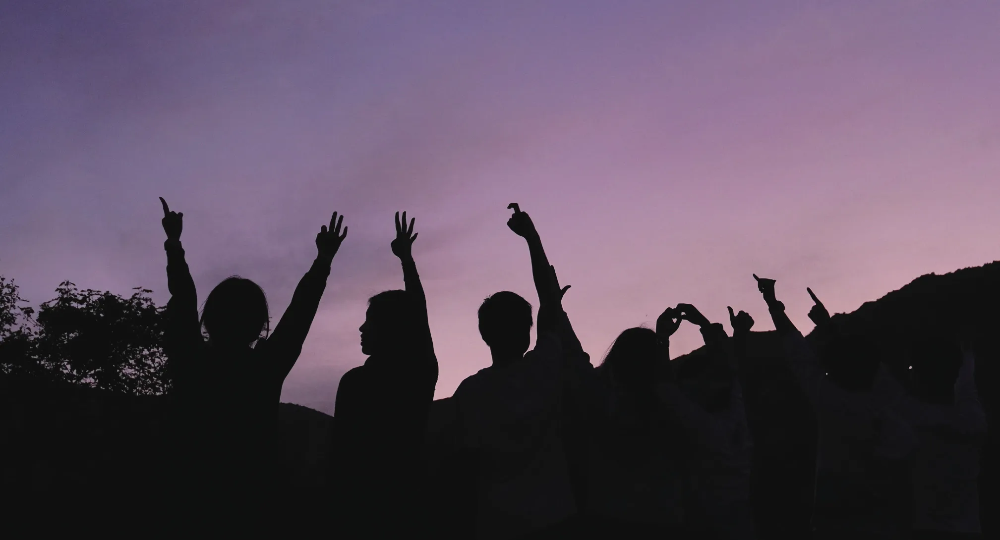
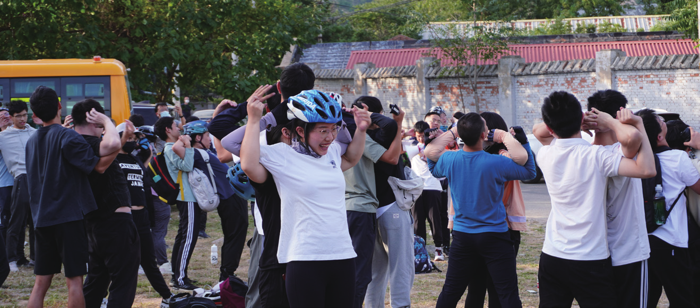
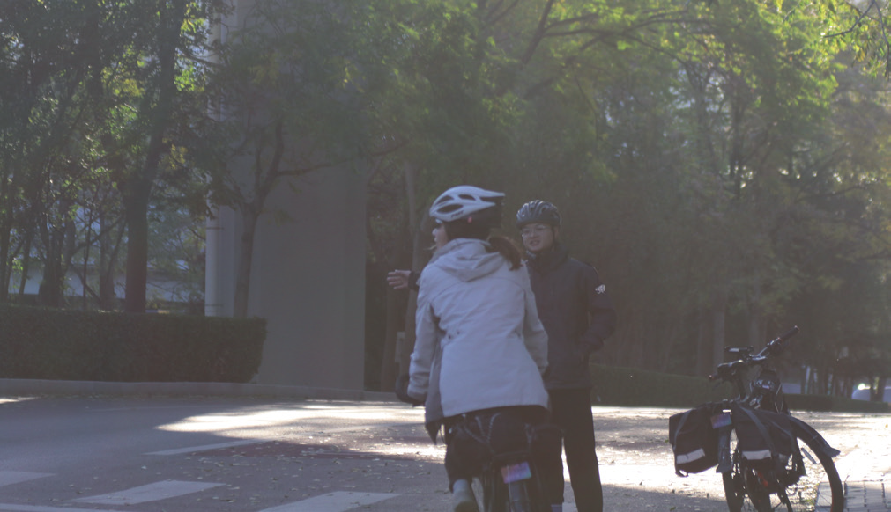
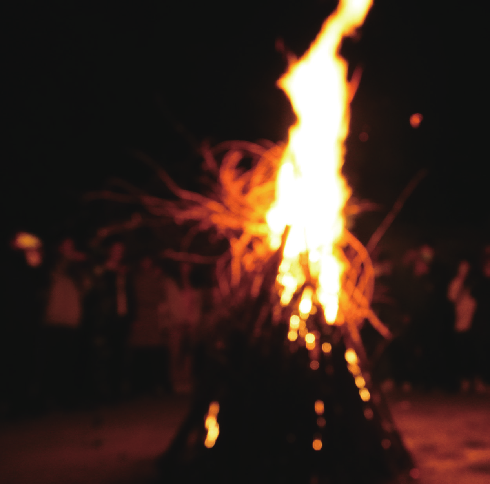

“爱”与车协的三重关系
原刊110








团队、梦想、爱，是协会十六字精神外最重要的精神格言。在协会呆到第四年的时候，我意识到，其实“爱”可以概括协会与我们的一切联系。在协会中，如何爱，是决定了我们自己、我们身边人，甚至是这个协会的命运的。
曾经我在自己的公众号中写过一篇文章，叫《爱车协的三种层次》。有很多人赞同，也有很多人批评。批评的理由之一，是“层次”显得有高低之分。
很抱歉让受众们产生这种误会。那我就在入会11年以后，离开协会4年以后，以“爱”和车协的关系为主题，再精炼地分享一下我的思考。
第一种关系：爱自己
所谓“爱自己”，就是在协会中满足自己的精神需求，比如突破身体极限、获得身心愉悦、获得自我认可。这是我们在协会生存的基础。无论新老会员，都会希望能骑得更快、骑得更好，或者更受欢迎、更受尊重。
当在协会中满足了这种需求，那么自然而然地就会留在协会。但是，如果一个人只是将协会作为满足自己精神需求的渠道，那么他在协会的时光可能会很短暂，或者很不如意。原因很简单，协会的拉练虽然能强身健体，但并不能使人在骑行能力和身体素质上得到明显突破；在协会活动当然可以交到朋友，但任何美好的故事都有结局，更何况不是每个人都能结局完美；更何况，协会里面不光是有愉快和美好，也有很多龃龉和矛盾。
因此，一个车协如果仅仅限于提高车协人的个人能力，或者是只注重骑行能力（速度、竞赛、技巧），那么这种培养只不过是不断的让“爱自己”的程度不断提升，这种提升虽然短时间可以让一个集体迸发出非常猛烈的力量，但却并不能持久。道理非常简单，当一个会员的骑行能力在集体的培养之下越来越高，那么这个人迟早会因为厌倦了协会的相对较低水平而离开这个集体，而这个集体的所有努力也就付之东流了。
这也就是为什么很多以竞技为核心的高校车协难以传承。其他技能也如此。以修车为例，学会修车当然可以使自己的技能得到提升，给他人修车也能得到他人的认可，获得内心的满足。
但当这种满足得到了足够多以后，修车可能什么都不能获得，甚至非常劳累，也就自然而然地不会再愿意在协会修车了。
第二种关系：爱他人
所谓“爱他人”，就是在协会中与他人产生爱的关系。比如得到关爱和照顾，照顾和关爱他人，亦如交到了很好的朋友，产生了很深的感情。这是很多会员所怀念和珍视的。
但是，如果一个人是因为与他人的爱才留在协会，那虽然可能他能在协会中有一段很美好，且并不短暂的经历，但却并没有和协会产生真正的联系，更不可能产生持久的联系。最典型的现象是，暑期队员去完暑期后，只有自己的团众当队长/负责的时候才会出来骑车，或者参加活动，或者担当职务。
产生这种现象的根本原因是，协会只是产生这种爱的联系的客观环境，却从来没有在这个爱的关系中扮演任何重要的角色。当在协会中建立的，与他人的爱的关系足够多时，那就不再需要和协会产生任何交集，甚至不希望和协会产生任何交集了。更加现实的问题是，如果一个人只是因为与他人的爱才留在协会，那么他对协会的各种习惯、规则或精神可能是无法真正理解透彻的，甚至可能根本没有接受，而是忍耐。
比如说，只有自己的朋友、团众的话才听得进去，只有和自己关系好的人才热心相待，只有对照顾过自己的人才悉心照顾。虽然有些时候这也叫“团队”，但这种团队恐怕还有一种词来描述，叫“小团体”。如果我们协会的会员都仅仅是因为在协会中建立了与他人的爱的联系而参与协会活动，甚至参与协会的日常管理，那么在很多问题的思考和处理上就完全不能摆脱感情的因素，造成明显的“亲疏有别”，“好恶分明”，那这个协会就不可能有长久的生命力。
这同样反面证明了，协会不可能是仅靠人际关系就走到了今天。当然，必须要肯定和承认的是，“爱他人”是协会中维系会员关系最重要的纽带之一，是非常宝贵的。每个人在协会中都希望得到他人的爱，也自然会因此而为他人奉献自己的爱。
但是我个人还是要坚决地指出，这种爱是有局限性的。而且，如果协会希望继续长久地以一个大集体而生存和发展下去，很可能要坚决地、持续地克服这种局限。
第三种关系：爱协会
所谓“爱协会”，是指因协会而爱，爱协会的本体，脱离于自身和他人。此时，协会是被爱的，也是爱的源泉。一个“爱协会”的人在协会的一些事情不是给自己，也不是给他人做的，而是给这个集体做的。
无论是什么情形，只要是协会需要的，他们都会站出来，而不会去看到底是哪个具体的人遇到了困难。他们虽然也会因为一些具体的人和事而遭到打击或者困扰，但是依然会因为与协会的爱而尽可能地奉献自己的力量。准确来说，“爱车协”是对车协集体的责任感和集体荣誉感，是对所有成员保持的平等、足量，且最大可能不偏狭的关爱和理解。
一个真正“爱车协”的人，会努力地追求车协向上进步，而不是沉溺于小圈子的互爱当中。他们敢于承担责任，不只为了一个人或者某些人的利益和体验，而是为了车协整体的利益和共同体验。在这个过程中，由于车协的绝大多数人都只停留在“爱自己”和“爱他人”的状态，因此“爱车协”的人需要面对不同价值取向和不同思维方式的会员，同他们合作、交流、沟通，寻找一个车协的共同精神和共同道路。
也正因为如此，他们需要一分为二、为三地看一个人、一类人，或者是一件事、一类事。他们不能用单纯的好恶——也就是“爱他人”的标准去判断一个人，也不能因为一个人不被自己所爱就放弃他、排斥他。他们必须看到所有人的优点，也必须能够接受意见、承受批评，并且努力去纠正错误，不被“感情”所束缚。
总之，真正称得上“爱车协”的人，把集体的利益放在第一位，把维护个人的感情放在第二位，把个人的成就感和幸福感放在最后一位。而他们也往往因为公益的角度牺牲自己，并获得绝大多数人的支持和理解，最终实现个人的提升和进步。相反，只会“爱自己”的人虽然可以骑车速度最快，但是他们不能带动一群人骑的更快。
只会“爱他人”的人虽然可以享受友情和爱情的温暖，但是却永远不能获得绝大多数人的认可和支持，更不能站在一个更加高远的角度去处理人际关系的问题。如果这两类人不能提升到“爱车协”的高度，他们的爱也不会持久，对车协的发展也缺乏长久的帮助——虽然他们对于协会的帮助也是极为可贵，值得所有人感谢的。
尾声
我并不是要说，协会里面，注重“爱自己”和“爱他人”都是肤浅的。我再一次重申，在我看来这都是非常重要的、可贵的“爱”，是包含在“团队、梦想、爱”格言中的，是协会生存和发展的根本动力之一。但是，面对一些老生常谈的表象问题，我觉得有必要揭示，恰恰是这两种关系的局限性产生了困扰我们的问题。
必须要指出的是，我个人认为，任何特权都不是协会会员留在协会的理由。因为特权很显然只是“爱自己”的层次。事实上，很可能任何一个因为和他人产生爱的联系（也就是“爱他人”）的会员，都不会把协会中的任何特权放在眼里，因为他们很可能并不需要这种特权（想想老会员免检、特检的特权就知道了）。
而那些只产生了“爱自己”关系的会员，即使短暂地享受这种特权，也会因为不能获得更多而依然停止为这个协会和协会中的人作出任何付出。协会当中的人，是彼此奉献彼此，彼此关爱彼此的关系。正因为有了每个人为协会的贡献，才会使我们有了产生爱的土壤，以及扩展爱的空间。
因此，无论什么时候，我们最重要的，就是要让这个协会里面，奉献爱的人能被爱，享受爱的人能有机会为他人奉献爱，并且让所有的会员都理解，只有共同呵护好这个协会，才能让爱变得长久，并将这份自己得到的爱传递给后来的人。2023.3.15